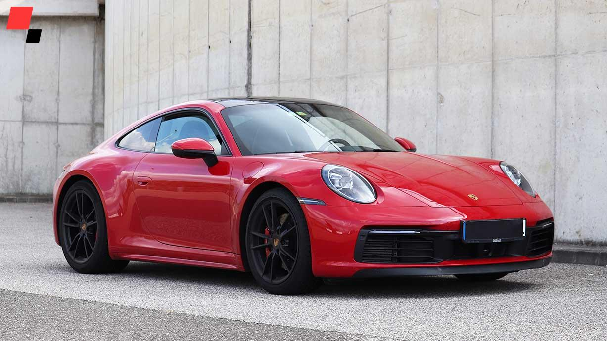
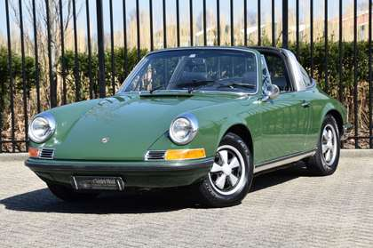

Vinczeffy Gergely
Mi a célom?
- Szeretnék egy autót.
- Kellemes munkahelyem legyen
Mit tanultam eddig?
- Rendszer üzemeltető
- Számitogép Szerelő
- IFI Elnők
Kedvenc tevékenységem?
- Játék
- FBI Keresés

